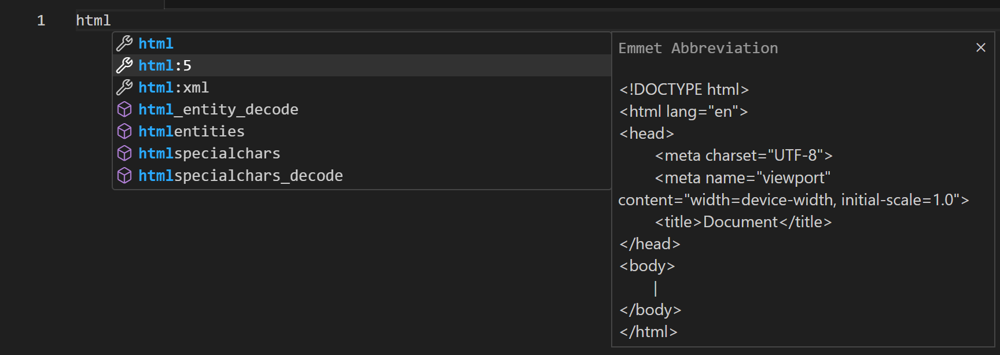
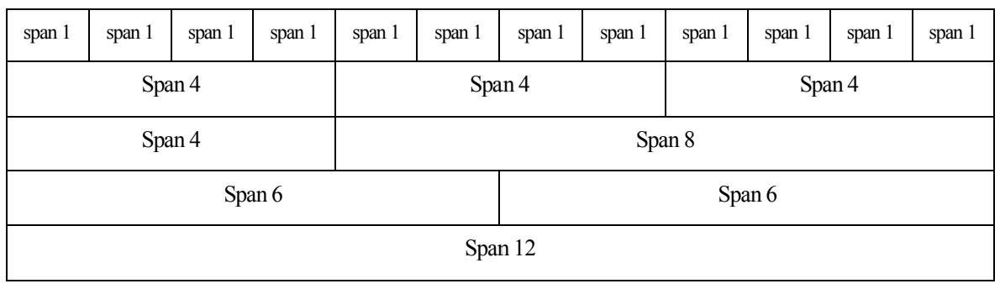
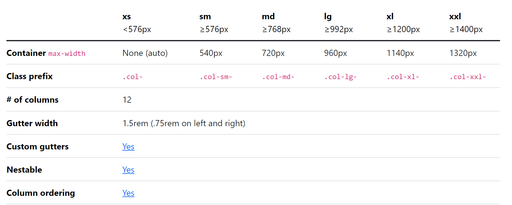
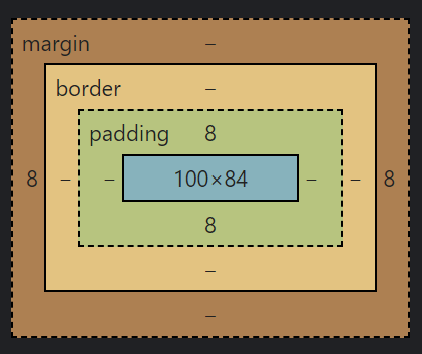
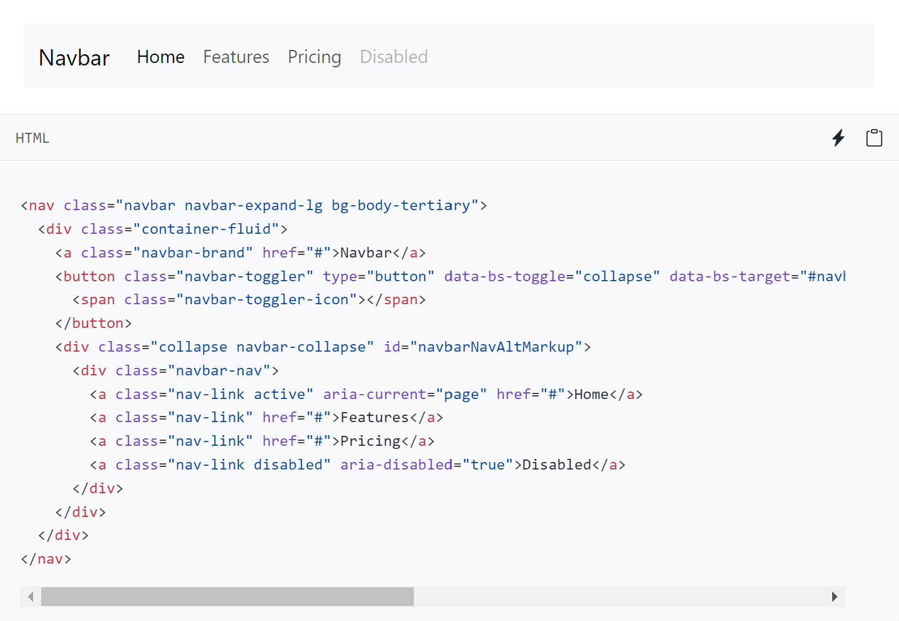
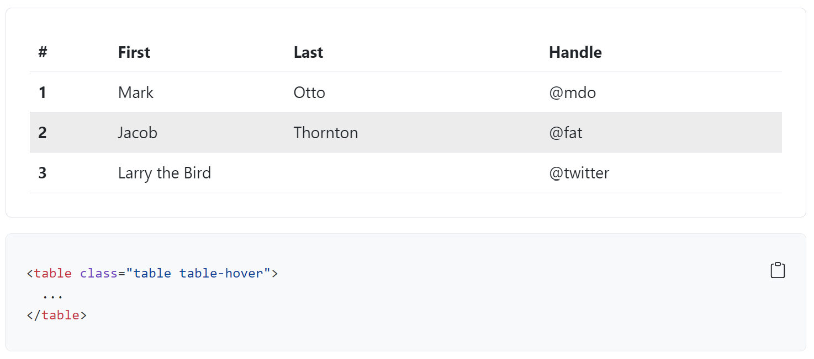
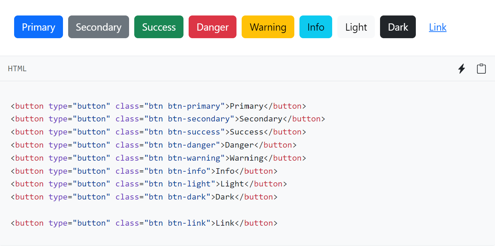
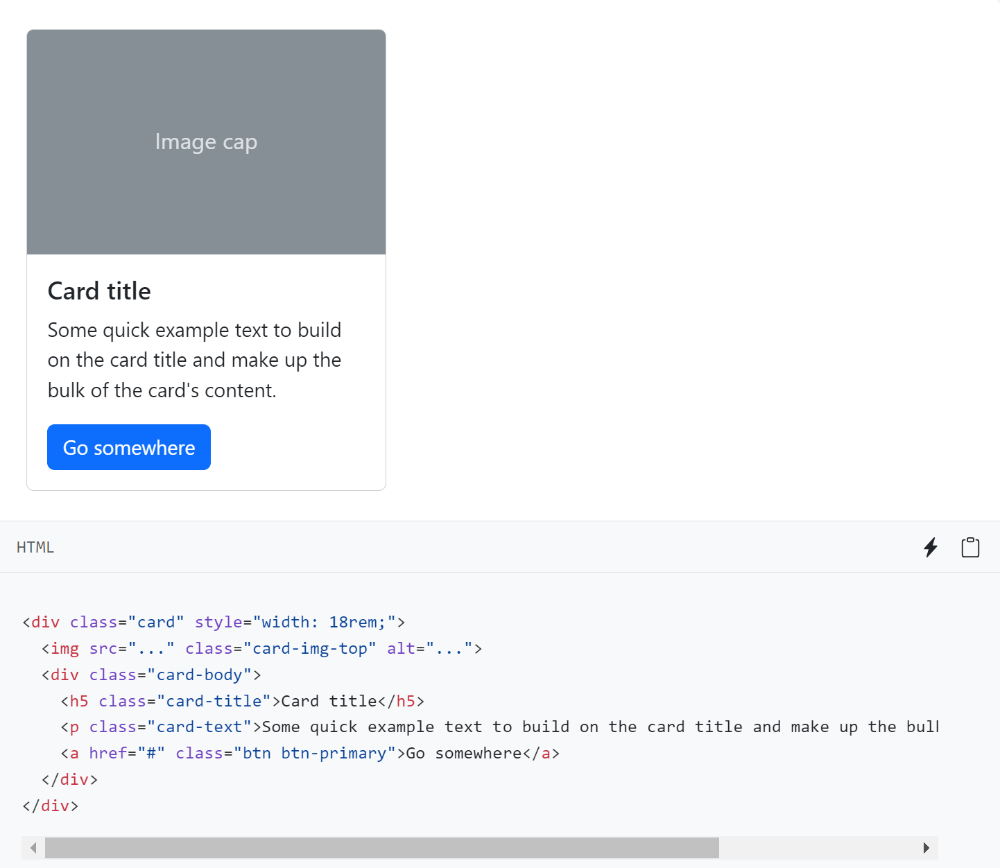

4. Playfair
Pengenalan Responsive Web Design
Desain Web Responsif (Responsive Web Design) merupakan penggunaan HTML dan CSS untuk dapat mengubah ukuran, menyembunyikan, mengecilkan, atau memperbesar situs web secara otomatis, agar dapat terlihat bagus pada semua perangkat (desktop, tablet, dan handphone).
Halaman web responsive dilakukan dengan menambahkan elemen meta pada dokumen HTML seperti berikut:
<meta name="viewport" content="width=device-width, initial-scale=1.0">Penambahan elemen meta digunakan untuk mengatur viewport pada dokumen HTML sehingga dapat tampil lintas perangkat. Pada penambahan elemen meta tersebut juga akan memberikan instruksi ke web browser dalam mengatur dimensi dan skala halaman web.
Responsive pada Image
Penerapan responsive dapat diberlakukan juga pada image dengan menambahkan atribut width dengan nilai 100%.
<img src="images.jpg" style="width:100%;">Responsive pada Text
Responsive pada text dapat diterapkan dengan menggunakan unit “vw”, yang berarti “viewport width” atau “lebar viewport”.Viewport adalah ukuran jendela browser. 1 vw adalah 1% dari lebar viewport. Jika viewport lebar 50cm, 1vw adalah 0,5cm.
<h1 style="font-size:10vw">Hello World</h1>Responsive Web Design Framework (Bootstrap)
Bootstrap merupakan HTML, CSS dan Javascript framework paling popular untuk mengambangkan responsive web design yang mengutamakan tampilan mobile (mobile first) Bootstrap dapat diunduh secara gratis pada laman https://getbootstrap.com/. Sampai saat modul ini dibuat versi terakhir adalah Bootstrap v5.3.
Mengapa menggunakan Bootstrap?
Banyak keuntungan dan kemudahan yang diberikan Bootstrap diantaranya adalah:
Berikut adalah beberapa penjelasan mengenai Bootstrap:
Responsif: Salah satu fitur utama Bootstrap adalah kemampuannya untuk menghasilkan tampilan yang responsif secara otomatis. Dengan menggunakan class CSS yang telah disediakan oleh Bootstrap, elemen-elemen halaman web dapat menyesuaikan diri dengan baik pada berbagai perangkat dan ukuran layar, mulai dari desktop hingga perangkat mobile.
Grid System: Bootstrap menyediakan sistem grid yang fleksibel untuk membagi layout halaman web menjadi kolom-kolom yang responsif. Grid system ini memungkinkan pengaturan layout yang mudah dan dapat diatur untuk menciptakan tampilan yang rapi dan terstruktur pada berbagai perangkat.
Komponen Siap Pakai: Bootstrap menyediakan beragam komponen UI siap pakai seperti tombol, navigasi, formulir, jumbotron, kartu, jendela modal, dan banyak lagi. Komponen ini telah dirancang dengan baik dan dapat langsung digunakan dalam proyek tanpa perlu memikirkan desain atau gaya dasar, menghemat waktu dan usaha pengembangan.
Gaya dan Tema: Bootstrap memiliki gaya dan tema default yang estetis dan modern. Selain itu, Bootstrap juga menyediakan beragam tema kustom yang dapat diterapkan dengan mudah untuk memberikan tampilan yang unik dan sesuai dengan kebutuhan proyek Anda. Anda juga dapat menyesuaikan gaya dan tema Bootstrap sesuai dengan preferensi Anda sendiri.
Kompatibilitas Browser: Bootstrap dirancang untuk mendukung sebagian besar browser modern. Ini berarti tampilan dan fungsionalitas situs web yang dibangun dengan menggunakan Bootstrap akan konsisten dan berfungsi dengan baik di berbagai browser yang umum digunakan.
Dokumentasi dan Komunitas: Bootstrap memiliki dokumentasi yang sangat baik, lengkap dengan contoh-contoh kode dan penjelasan yang rinci. Selain itu, karena popularitasnya, Bootstrap memiliki komunitas pengembang yang besar dan aktif, yang dapat memberikan dukungan dan sumber daya yang berguna untuk menjawab pertanyaan, memecahkan masalah, dan berbagi pengalaman.
HTML5
Penambahan doctype dilakukan untuk menetapkan dokumen HTML sebagai HTML versi 5 (HTML5), agar dapat menggunakan elemen-elemen HTML5 dan properti CSS Bootstrap. Sebagai contohnya pada script berikut.
<!DOCTYPE html>
<html>
</html>Jika menggunakan Text Editor Visual Studio Code, ketika mengetikan html di awal kode maka akan muncul snippets yang memunculkan beberapa pilihan template kode

Grid System
Pada Bootstrap menerapkan grid system dengan 12 (dua belas) kolom pada setiap halaman. Jika kita tidak menginginkan layout menggunakan ke-12 kolom, kita bisa mengelompokkan kolom bersama untuk membuat kolom yang lebih lebar. Sebagai contoh gambaran dari grid system dengan 12 kolom ditampilkan seperti pada gambar di bawah ini.

Sistem grid pada bootstrap dapat menyesuaikan terhadap enam keadaan atau ukuran diantaranya adalah :
- Ekstra kecil atau extra small (xs)
- Kecil atau small (sm)
- Sedang atau medium (md)
- Besar atau large (lg)
- Ekstra besar atau extra large (xl)
- Ekstra ekstra besar atau extra extra large (xxl)

Fungsi Bootsrtap yang umum digunakan
Grid
Seperti yang telah dijelaskan pada Grid System, bahwa pada bootstrap dapat mengelompokkan layout menjadi 12 kolom, dimana kita dapat menggunakan grid ini dengan kelas row yang didalamnya terdapat kelas col, seperti berikut:<div class="row"> <div class="col"></div> ... </div><!-- row-->
Dalam kelas col ini dapat dituliskan dengan value seperti col-4, yang artinya objek yang diberikan kelas tersebut pada row atau baris akan mengisi sebanyak 4 kolom. Dalam 1 row tersebut dapat berisi dengan akumulai 12 kolom.
Selain iitu juga bisa dikombinasikan dengan class breakpoint. Pada seperti yang dijelaskan pada tabel penjelasan grid system bahwa kolom akan mengikuti ukuran breakppoint dari device yang dimasukkan. Misalkan col-md-4, maka ketika ukuran dari device yang digunakan lebih besar dari atau sama dengan 768px maka tampilan kolom akan mendatar memenuhi row, namun akan berubah tampilannya jika ukuran devicenya berkurang 1 pixel saja (kurang dari 768px).Warna
Terdapat beberapa template kelas warna yang disediakan oleh Bootstrap diantaranya- Primary: (Biru tua)
- Secondary: (Abu-abu)
- Success: (Hijau)
- Danger: (Merah)
- Warning: (Kuning)
- Info: (Biru cerah)
- Light: (Putih atau hampir putih)
- Dark: (Hitam atau hampir hitam)
Pemilihan warna juga merupakan hal yang sangat penting dan perlu diperhatikan.Pemilihan warna akan sangat berpengaruh pada tampilan atau UI sehingga akan mempercantik tampilan dan menarik bagi user. Selain itu dengan warna yang sesuai akan membantu menyampaikan fungsi dari fitur, misalnya merah menandakan suatu yang penting yang memerlukan perhatian lebih, hal tersebut akan memudahkan konsumen dalam menggunakan aplikasi atau disebut user experience
Typografi
Dalam cara penulisan pada bootstrap memberikan kemudahan dalam mengatur tampilan teks, melalui beberapa class, sepertiHeading, selain menggunakan tag
<h1>,<h2>,..,<h6>pada bootstrap juga terdapat kelas heading contohnya:<p class="h1">Heading 1<p>Display, dengan manambahkan class display pada teks akan memberikan tampilan teks yang besar namun dengan style font yang tipis, misalnya:
<p class="display-1">Display 1</p>Font Size, class font size atau yang ditulis fs memberikan styling berupa ukuran dari teks dimana semakin besar nilai fs akan semakin kecil font yang ditampilkan:
<p class="fs-1">ini teks</p>Font Weight, melalui font weight dapat memberikan pengaturan terhadap tebal tipis dari font atau teks, dengan parameter bolder, bold, light, lighter, dan normal, berikut contoh penggunaannya:
<p class="fw-bold">Ini tebal</p>Font Style, dengan font style kita dapat merubah style dari font atau teks bold dan italic tanpa menggunakan tag html
<b> dan <i>, atau sebagai berikut:<p class="fst-italic">ini font style</p> <p class="fst-normal">ini font style</p>
Spacing & Sizing
Pengaturan Spasi dan ukuran pada Bootstrap dapat menggunakan padding dan margin, Padding merupakan bagian yang membatasi konten dengan border, sedangkan margin merupakkan bagian yang membatasi antara border dengan bagian luar dari konten. Pengaturan margin dan padding dapat dilakukan dengan mudah hanya dengan menambahkan class m untuk margin dan p untuk padding yang diikuti dengan parameter t (top), b (bottom), s (start), e (end), x (menambahkan pada kedua sis horizontal), y (menambahkan pada kedua sisi vertikal), serta diikuti oleh besar margin atau padding yang diinginkan dengan nilai mulai dari 1 hingga 5, atau seperti berikut:
```html <!-- Heading --> <div class="item mt-5 mb-3">item1</div> <div class="item ms-2 me-3">item2</div> <div class="item my-5">item3</div> <div class="item mx-3">item4</div> <div class="item m-3">item4</div> <!-- Padding --> <div class="item pt-5 pb-3">item1</div> <div class="item ps-2 pe-3">item2</div> <div class="item py-5">item3</div> <div class="item px-3">item4</div> <div class="item p-3">item4</div> ```

Komponen yang umum digunakan
- Navbar Navbar pada bootstrap sudah memiliki kemampuan untuk responsif ketika ukuran dari perangkat yang digunakan terlalu kecil untuk menampilkan konten atau menu didalamnya akan otomatis menjadi humberger menu, berikut salah satu contoh dokumentasi navbar yang umum digunakan.

- Table Pada class yang disediakan bootstrap terdapat beberapa pilihan tampilan table dan modifikasi yang diberikan, dengan memasukkan tag table ke dalam div yang diberikan kelas dari table yang diinginkan misalnya seperti berikut :

- Button Tombol merupakan bagian terpenting dalam suatu tampilan website yang dapat mengirimkan input dari pengguna ke server. Dalam bootstrap terdapat beberapa variasi yang diberikan untuk penggunaan tombol atau button misalnya warna, bentuk, style, rounded dan masih banyak lagi yang bisa didalami melalui dokumentasi yang ada pada halaman bootstrap

- Card Pada website blog atau e-commerce biasanya menampilkan artikel-artikel mereka pada card dapat menampilkan gambar, serta deskripsi atau tombol untuk melihat lebih banyak mengenai informasi dari blog tersebut. berikut adalah contoh penggunaan card:
